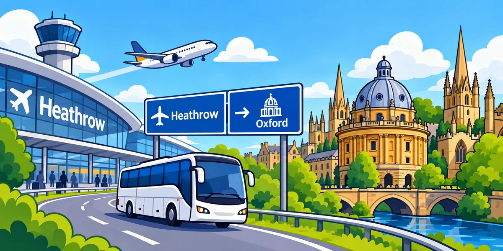

A cheap fare can become awkward after a long flight if it requires two changes and a station transfer.
London airport transfer routes
Compare transfers from all six main London airports
Route-by-route guides for travellers choosing between train, coach, taxi and private transfer — with the focus on your real destination, not just the airport.
Route facts reviewed · 26 September 2026
LHR → London✈️
Heathrow Airport → London
Heathrow to LondonChoose by area: Paddington, West End, City or Victoria
Compare Heathrow → London →
LHR → Oxford✈️Heathrow Airport → Oxford
Heathrow to OxfordUseful fact: direct coach; no direct train.
Open route guide → STN → London✈️
STN → London✈️Stansted Airport → London
Stansted to LondonUseful fact: direct rail to Liverpool Street.
Open route guide → LGW → Brighton✈️
LGW → Brighton✈️Gatwick Airport → Brighton
Gatwick to BrightonUseful fact: direct train in about 30 minutes.
Open route guide →LTN → London✈️
Luton Airport → London
Luton to LondonUseful fact: DART to Parkway, then direct trains into central London.
Open route guide →LCY → London✈️
London City Airport → London
London City to central LondonUseful fact: DLR station at the airport; direct services to Bank.
Open route guide →SEN → London✈️
London Southend Airport → London
Southend to LondonUseful fact: direct train to Stratford and Liverpool Street.
Open route guide →How to compare airport transfers
Use the whole journey, not only the ticket price
Check whether the train, coach or pickup point is at your terminal or needs an inter-terminal shuttle.
Train time to a city station is not the same as door-to-door time to your hotel, university or home.
Compare total group cost and physical effort, especially with children, pushchairs or several suitcases.
Late-night flights can change the answer completely if the final train has already departed.
Rail engineering, traffic and flight delays matter. Check live operator status on the day you travel.
By airport
What each London airport means for onward travel
Heathrow Airport transfers
Heathrow has three direct rail choices into London, while westbound destinations such as Oxford can avoid central London entirely.
Gatwick Airport transfers
Gatwick has unusually strong rail connectivity. The station is at South Terminal, with the North Terminal linked by a free shuttle. Brighton is one of the clearest direct south-coast routes.
Stansted Airport transfers
Stansted sits north-east of London. The direct Stansted Express to Liverpool Street is strong for central and east London; coaches and private transfers can make more sense for other final addresses.
Luton Airport transfers
Luton Airport connects to Luton Airport Parkway via the Luton DART, then direct trains run to several central London stations. Direct coaches leave from the terminal and can better match Victoria or Paddington.
London City Airport transfers
London City Airport is in east London with its own DLR station. Direct DLR services towards Bank suit the City, while Canary Wharf and the West End depend on the best interchange for the final address.
London Southend Airport transfers
Southend Airport has a station beside the terminal with direct Greater Anglia trains to Stratford and Liverpool Street. West and south London usually require an onward connection.
Next useful corridors
Planned route guides
These are not thin pages yet. They stay unpublished until each route has its own transport logic, practical tips and checked data.
Heathrow → Reading
Heathrow → Southampton
Heathrow → Cambridge
Gatwick → London
Gatwick → Southampton
Stansted → Cambridge
Luton → Oxford
Southend → Essex destinations
Which London airports does Terminal2City cover?
The search covers Heathrow, Gatwick, Stansted, Luton, London City and Southend. Detailed route guides are published only when they contain useful destination-specific information.
Can I compare train, coach and private airport transfers?
Yes. We compare whichever transport types make sense for the route, including directness, transfers, approximate journey time, luggage considerations and official live-information links.
Why route pages are destination-specific
“Airport to London” is often not enough information
Two travellers landing on the same flight can need completely different routes if one stays by Liverpool Street and the other by Victoria. Terminal2City builds guides around the final destination, interchange burden, arrival time and luggage — not only the airport name.
Final neighbourhood
The station or coach stop that is useful for one hotel can add another 30–45 minutes for another.
Night-time reality
A fast daytime train is not automatically the best plan after a late flight. Live timetable checks matter.
Whole journey friction
We count changes, luggage handling and the last mile — not just the fastest headline segment.